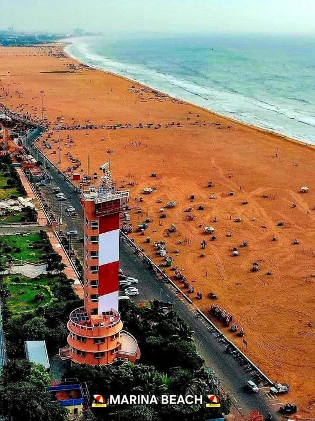

|
 |
|
| | | | | | | | | | | | | | | | | | | | | | | | | | | | | |
Marina Beach is one of the longest urban beaches in the world and a major tourist attraction in Chennai. Known for its golden sand, sea breeze, and beautiful sunrise views, the beach attracts thousands of visitors daily. People enjoy walking, playing, relaxing, and tasting local street foods like sundal and bhajji. Several statues, memorials, and historical landmarks are located along the beach road. Marina Beach is also an important cultural and social gathering place for the city. It reflects the beauty, energy, and coastal charm of Chennai while providing entertainment and relaxation for people of all ages. |